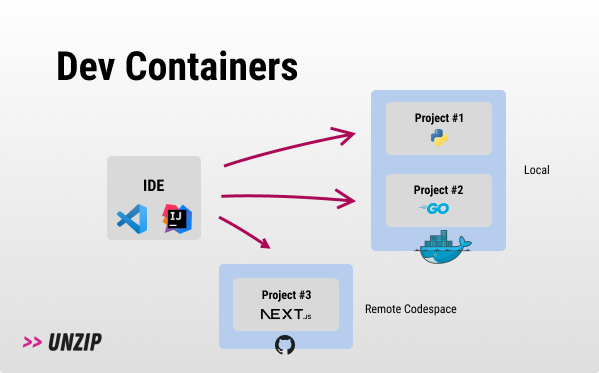
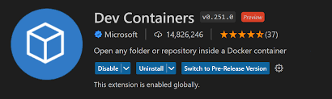

<!DOCTYPE html>
<html lang="en">
  <head>
    <meta charset="utf-8" />
    <meta name="viewport" content="width=device-width, initial-scale=1.0, maximum-scale=1.0, user-scalable=no" />

    <title></title>
    <link rel="stylesheet" href="dist/reveal.css" />
    <link rel="stylesheet" href="dist/theme/consult.css" id="theme" />
    <link rel="stylesheet" href="plugin/highlight/zenburn.css" />
	<link rel="stylesheet" href="css/layout.css" />
	<link rel="stylesheet" href="plugin/customcontrols/style.css">


    <script defer src="dist/fontawesome/all.min.js"></script>

	<script type="text/javascript">
		var forgetPop = true;
		function onPopState(event) {
			if(forgetPop){
				forgetPop = false;
			} else {
				parent.postMessage(event.target.location.href, "app://obsidian.md");
			}
        }
		window.onpopstate = onPopState;
		window.onmessage = event => {
			if(event.data == "reload"){
				window.document.location.reload();
			}
			forgetPop = true;
		}

		function fitElements(){
			const itemsToFit = document.getElementsByClassName('fitText');
			for (const item in itemsToFit) {
				if (Object.hasOwnProperty.call(itemsToFit, item)) {
					var element = itemsToFit[item];
					fitElement(element,1, 1000);
					element.classList.remove('fitText');
				}
			}
		}

		function fitElement(element, start, end){

			let size = (end + start) / 2;
			element.style.fontSize = `${size}px`;

			if(Math.abs(start - end) < 1){
				while(element.scrollHeight > element.offsetHeight){
					size--;
					element.style.fontSize = `${size}px`;
				}
				return;
			}

			if(element.scrollHeight > element.offsetHeight){
				fitElement(element, start, size);
			} else {
				fitElement(element, size, end);
			}		
		}


		document.onreadystatechange = () => {
			fitElements();
			if (document.readyState === 'complete') {
				if (window.location.href.indexOf("?export") != -1){
					parent.postMessage(event.target.location.href, "app://obsidian.md");
				}
				if (window.location.href.indexOf("print-pdf") != -1){
					let stateCheck = setInterval(() => {
						clearInterval(stateCheck);
						window.print();
					}, 250);
				}
			}
	};


        </script>
  </head>
  <body>
    <div class="reveal">
      <div class="slides"><section  data-markdown><script type="text/template"><!-- .slide: class="drop" -->
<div class="" style="position: absolute; left: 0px; top: 0px; height: 700px; width: 960px; min-height: 700px; display: flex; flex-direction: column; align-items: center; justify-content: center" absolute="true">

<style>
code {
	font-weight: bolder;
	color: green;
}

.code-wrapper {
	width: 600px !important
}
</style>
## Enhancing Development with VS Code Dev Containers


</div></script></section><section  data-markdown><script type="text/template"><!-- .slide: class="drop" -->
<div class="" style="position: absolute; left: 0px; top: 0px; height: 700px; width: 960px; min-height: 700px; display: flex; flex-direction: column; align-items: center; justify-content: center" absolute="true">

## Module 7 Goals

- Understand the challenges of inconsistent local development environments
- Learn how VS Code Dev Containers provide a solution.
- Understand the role of the `.devcontainer` folder and `devcontainer.json`.
- See how to configure a development environment using Dockerfiles or Docker Compose.
- Appreciate the benefits for individual developers and teams.

**Let's make development smoother!**
</div></script></section><section  data-markdown><script type="text/template"><!-- .slide: class="drop" -->
<div class="" style="position: absolute; left: 0px; top: 0px; height: 700px; width: 960px; min-height: 700px; display: flex; flex-direction: column; align-items: center; justify-content: center" absolute="true">

## The Local Development Challenge Revisited

- "Works on my machine" isn't just a deployment problem, it starts during development!
- Who can remember the common issues?
</div></script></section><section  data-markdown><script type="text/template"><!-- .slide: class="drop" -->
<div class="" style="position: absolute; left: 0px; top: 0px; height: 700px; width: 960px; min-height: 700px; display: flex; flex-direction: column; align-items: center; justify-content: center" absolute="true">

## Solution: Develop _Inside_ Containers!

- We already know how to package applications with their dependencies using Dockerfiles.
- **What if we could use a container as our full-featured development environment?**
    - All tools, libraries, and runtimes defined in code (Dockerfile/Compose).
    - Consistent environment regardless of the host OS.
    - Easily shareable and reproducible.
</div></script></section><section  data-markdown><script type="text/template"><!-- .slide: class="drop" -->
<div class="" style="position: absolute; left: 0px; top: 0px; height: 700px; width: 960px; min-height: 700px; display: flex; flex-direction: column; align-items: center; justify-content: center" absolute="true">

## VS Code Dev Containers Extension




- An extension for Visual Studio Code.
- Allows you to open any folder on your machine **inside** (or mounted into) a Docker container.
- Leverages your existing Docker installation.
- Provides a seamless experience – feels like local development, but runs inside a defined container environment.
</div></script></section><section  data-markdown><script type="text/template"><!-- .slide: class="drop" -->
<div class="" style="position: absolute; left: 0px; top: 0px; height: 700px; width: 960px; min-height: 700px; display: flex; flex-direction: column; align-items: center; justify-content: center" absolute="true">

## How Does It Work? The `.devcontainer` Folder

- You add a `.devcontainer` folder to your project's root directory.
- Inside this folder, the key file is `devcontainer.json`.
- **`devcontainer.json`** tells VS Code how to:
    - Build or pull the Docker image to use.
    - Configure the container environment.
    - Install specific VS Code extensions _inside_ the container.
    - Forward ports.
    - Run commands after the container is created.
- Can reference a `Dockerfile` or a `docker-compose.yml` file for the environment definition.
</div></script></section><section  data-markdown><script type="text/template"><!-- .slide: class="drop" -->
<div class="" style="position: absolute; left: 0px; top: 0px; height: 700px; width: 960px; min-height: 700px; display: flex; flex-direction: column; align-items: center; justify-content: center" absolute="true">

## The `devcontainer.json` File - Key Properties

- **Defines the Environment**
- _**Configures VS Code inside the container**_
- **Manages Container Lifecycle
</div></script></section><section  data-markdown><script type="text/template"><!-- .slide: class="drop" -->
<div class="" style="position: absolute; left: 0px; top: 0px; height: 700px; width: 960px; min-height: 700px; display: flex; flex-direction: column; align-items: center; justify-content: center" absolute="true">

## The Workflow

**(Simple Diagram: Project Folder -> Add .devcontainer -> VS Code Command Palette -> "Reopen in Container" -> VS Code connects to Container)**

1. Add a `.devcontainer` folder with `devcontainer.json` (and optionally Dockerfile/Compose file) to your project.
2. Open the project folder in VS Code (on your host machine).
3. VS Code detects the `.devcontainer` configuration and prompts you: "Reopen in Container?". (Or use Command Palette: `Dev Containers: Reopen in Container`).
4. VS Code builds/pulls the image and starts the container(s).
5. VS Code installs a small server inside the container and connects to it.
6. Your project files are mounted into the container.
7. You develop as usual, but terminals, debuggers, and extensions run _inside_ the defined container environment.
</div></script></section><section  data-markdown><script type="text/template"><!-- .slide: class="drop" -->
<div class="" style="position: absolute; left: 0px; top: 0px; height: 700px; width: 960px; min-height: 700px; display: flex; flex-direction: column; align-items: center; justify-content: center" absolute="true">

## Slide 9: Benefits of Dev Containers

- ✅ **Consistency:** Everyone on the team uses the exact same development environment, tools, and dependencies.
- ✅ **Fast Onboarding:** New team members just need Docker, VS Code, and Git. Clone the repo, "Reopen in Container", and start coding!
- ✅ **Isolation:** Project dependencies don't pollute your host machine (or conflict with other projects).
- ✅ **Environment as Code:** The dev environment is version-controlled alongside the project code.
- ✅ **Dev/Prod Parity:** Use the same base image or Dockerfile for development as you do for production, reducing surprises.
- ✅ **Specific Tooling:** Include project-specific CLIs or tools directly in the dev environment.
</div></script></section><section  data-markdown><script type="text/template"><!-- .slide: class="drop" -->
<div class="" style="position: absolute; left: 0px; top: 0px; height: 700px; width: 960px; min-height: 700px; display: flex; flex-direction: column; align-items: center; justify-content: center" absolute="true">

## Lab 4 / Demo

- **Goal:** Build a dev container for the framework!
- **Tasks:**
    1. Open the Framework repo        
    2. Add a `.devcontainer` folder and a basic `devcontainer.json` file (referencing the existing Dockerfile or a pre-built image).
    3. Specify the Python VS Code extension to be installed.
    4. Use the "Reopen in Container" command.
    5. Explore the environment: Check the terminal, installed extensions, run the application/tests from within VS Code.
</div></script></section></div>
    </div>

    <script src="dist/reveal.js"></script>

    <script src="plugin/markdown/markdown.js"></script>
    <script src="plugin/highlight/highlight.js"></script>
    <script src="plugin/zoom/zoom.js"></script>
    <script src="plugin/notes/notes.js"></script>
    <script src="plugin/math/math.js"></script>
	<script src="plugin/mermaid/mermaid.js"></script>
	<script src="plugin/chart/chart.min.js"></script>
	<script src="plugin/chart/plugin.js"></script>
	<script src="plugin/customcontrols/plugin.js"></script>

    <script>
      function extend() {
        var target = {};
        for (var i = 0; i < arguments.length; i++) {
          var source = arguments[i];
          for (var key in source) {
            if (source.hasOwnProperty(key)) {
              target[key] = source[key];
            }
          }
        }
        return target;
      }

	  function isLight(color) {
		let hex = color.replace('#', '');

		// convert #fff => #ffffff
		if(hex.length == 3){
			hex = `${hex[0]}${hex[0]}${hex[1]}${hex[1]}${hex[2]}${hex[2]}`;
		}

		const c_r = parseInt(hex.substr(0, 2), 16);
		const c_g = parseInt(hex.substr(2, 2), 16);
		const c_b = parseInt(hex.substr(4, 2), 16);
		const brightness = ((c_r * 299) + (c_g * 587) + (c_b * 114)) / 1000;
		return brightness > 155;
	}

	var bgColor = getComputedStyle(document.documentElement).getPropertyValue('--r-background-color').trim();
	var isLight = isLight(bgColor);

	if(isLight){
		document.body.classList.add('has-light-background');
	} else {
		document.body.classList.add('has-dark-background');
	}

      // default options to init reveal.js
      var defaultOptions = {
        controls: true,
        progress: true,
        history: true,
        center: true,
        transition: 'default', // none/fade/slide/convex/concave/zoom
        plugins: [
          RevealMarkdown,
          RevealHighlight,
          RevealZoom,
          RevealNotes,
          RevealMath.MathJax3,
		  RevealMermaid,
		  RevealChart,
		  RevealCustomControls,
        ],


    	allottedTime: 120 * 1000,

		mathjax3: {
			mathjax: 'plugin/math/mathjax/tex-mml-chtml.js',
		},
		markdown: {
		  gfm: true,
		  mangle: true,
		  pedantic: false,
		  smartLists: false,
		  smartypants: false,
		},

		mermaid: {
			theme: isLight ? 'default' : 'dark',
		},

		customcontrols: {
			controls: [
			]
		},
      };

      // options from URL query string
      var queryOptions = Reveal().getQueryHash() || {};

      var options = extend(defaultOptions, {"width":960,"height":700,"margin":0.04,"maxScale":"2","controls":true,"progress":true,"slideNumber":false,"transition":"slide","transitionSpeed":"default"}, queryOptions);
    </script>

    <script>
      Reveal.initialize(options);
    </script>
  </body>

  <!-- created with Advanced Slides -->
</html>
